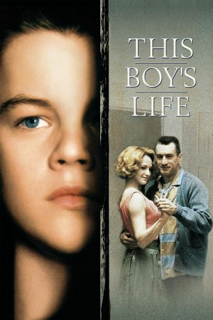

#2496 Die Geschichte einer Jugend
Alternativ: This Boy's Life
 
 IMDB-Wertung: 7.3 / 10
IMDB-Wertung: 7.3 / 10  Metascore: 60
Metascore: 60 
In 1957, a son and mother flee the East and an abusive boyfriend to find a new life, and end up in Seattle, where the mother meets a polite garage mechanic. The boy continually gets into trouble by hanging out with the wrong crowd. The mom marries the mechanic, but they soon find out that he's an abusive and unreasoning alcoholic, and they struggle to maintain hope in an impossible situation as the boy grows up with plans to escape the small town by any means possible. Based on a true story by Tobias Wolff.
Jahr: 1993
Dauer: 115 Minuten
FSK: 12
Land: USA Studio: Warner Bros.Tonspuren:
Untertitel: Deutsch,
Auflösung: 1080p (1920x800) Größe: 6696 MB
Genre: Biographie, Drama
Regisseur: Michael Caton-Jones
Drehbuch: Tobias Wolff, Robert Getchell
Soundtrack: Carter Burwell
Darsteller:
 Robert De Niro als Dwight
Robert De Niro als Dwight Ellen Barkin als Caroline
Ellen Barkin als Caroline Leonardo DiCaprio als Toby
Leonardo DiCaprio als Toby- Jonah Blechman als Arthur Gayle
 Eliza Dushku als Pearl
Eliza Dushku als Pearl Chris Cooper als Roy
Chris Cooper als Roy Carla Gugino als Norma
Carla Gugino als Norma Kathy Kinney als Marian
Kathy Kinney als Marian Tobey Maguire als Chuck Bolger
Tobey Maguire als Chuck Bolger Michael Bacall als Terry Taylor
Michael Bacall als Terry Taylor Gerrit Graham als Mr. Howard
Gerrit Graham als Mr. Howard Thomas Kopache als Geiger Counter Vendor
Thomas Kopache als Geiger Counter Vendor Lee Wilkof als Principal Shippy
Lee Wilkof als Principal Shippy- Sean Murray als Jimmy Voorhees
- Deanna Milligan als Silver Sister #1
- Robert Munns als Ticket Seller
 Bill Dow als Vice Principal
Bill Dow als Vice Principal Frank C. Turner als Truck Driver
Frank C. Turner als Truck Driver John R. Taylor als Minister
John R. Taylor als Minister Stephen E. Miller als Target Ranger
Stephen E. Miller als Target Ranger- Dwight McFee als Voice in crowd
- Zachary Ansley als Skipper
 Tracey Ellis als Kathy
Tracey Ellis als Kathy- Robert Zameroski als Arch Cook
- Tristan Tait als Jerry Huff
- Travis MacDonald als Psycho
- Richard Liss als A & P Manager
- Adam Sneller als Terry Silver
- Jason Horst als Oscar Booker
- Morgan Brayton als Silver Sister #2
- Shawn Macdonald als A & P Employee
- Ken Camroux als 2nd Place Shooter
- Ross Chaston als Score Caller
- Scott Woodmansee als Crash Witness
- Dennis Kostecki als Ticket Master , uncredited
- Marshall Dancing Elk Lucas als Cigar Store Owner , uncredited
Datei: X:\1993\Geschichte einer Jugend, Die (1993, FSK12, 1920x800).mkv seit 13.11.2015
Festplatte: HD 1992-1995
 Es gibt insgesamt 68 Filme in der Gruppe '1993'
Es gibt insgesamt 68 Filme in der Gruppe '1993'